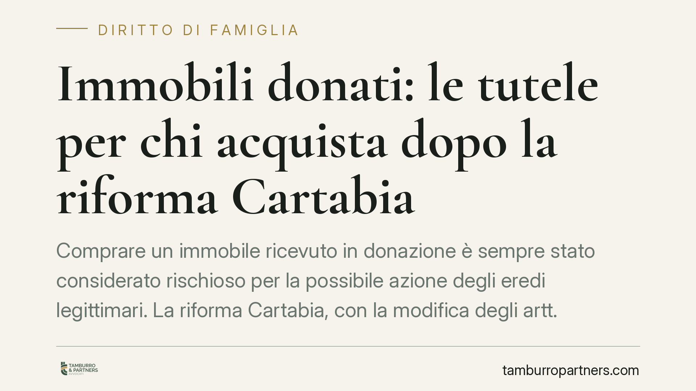

Immobili donati: le tutele per chi acquista dopo la riforma Cartabia
Comprare un immobile ricevuto in donazione è sempre stato considerato rischioso per la possibile azione degli eredi legittimari. La riforma Cartabia, con la modifica degli artt. 561 e 563 del Codice civile, ha ridisegnato questi meccanismi. Il punto non è l'abolizione delle tutele degli eredi, ma un diverso bilanciamento con l'esigenza di certezza della circolazione dei beni.

Il contesto: perché gli immobili donati fanno paura al mercato
Gli immobili di provenienza donativa hanno storicamente scontato una minore appetibilità sul mercato. Il motivo è tecnico: alla morte del donante, gli eredi legittimari (coniuge, figli, in loro assenza gli ascendenti) possono agire per far valere la loro quota di riserva, quella parte di eredità che la legge riserva loro anche contro la volontà del defunto.
Se la donazione lede quella quota, il legittimario può esperire l'azione di riduzione (art. 555 c.c.) e, in caso di incapienza del patrimonio del donatario, l'azione di restituzione contro il terzo che nel frattempo ha acquistato il bene (art. 563 c.c.). È proprio questa possibilità di "seguire" il bene presso terzi che ha reso banche e acquirenti prudenti.
L'inquadramento normativo corretto
È importante fare chiarezza sul dato normativo. La disciplina della circolazione degli immobili donati è stata incisa dalla Legge 206/2021 (delega per la riforma del processo civile, cd. riforma Cartabia) e dal successivo D.Lgs. 149/2022, che hanno modificato gli artt. 561 e 563 del Codice civile.
La direzione dell'intervento è quella di attenuare gli effetti dell'azione di restituzione verso il terzo acquirente, valorizzando i termini e i meccanismi già presenti nel sistema. Restano infatti i due presidi centrali dell'art. 563 c.c.:
- il termine di venti anni dalla trascrizione della donazione, decorso il quale l'azione di restituzione contro il terzo non è più esperibile;
- l'opposizione alla donazione che il coniuge e i parenti in linea retta del donante possono notificare e trascrivere per sospendere il decorso di quel termine.
Invitiamo a diffidare di ricostruzioni che parlano di una generica "abolizione della restituzione": l'azione degli eredi non scompare, ma opera entro confini più definiti e prevedibili.
Cosa cambia davvero: da tutela reale a diritto di credito
Il profilo più rilevante per chi compra è la tendenza a trasformare la tutela del legittimario da reale a obbligatoria. In termini pratici: anziché poter aggredire il bene presso il terzo per riprenderselo (tutela reale), il legittimario tende a essere soddisfatto in denaro dal donatario o dai suoi aventi causa (diritto di credito).
Per il terzo acquirente questo significa un rischio più contenuto di perdere l'immobile. Per il legittimario significa una protezione che non svanisce, ma si sposta sul piano economico. Per il donatario resta l'onere di rispondere del valore corrispondente alla quota lesa.
È fondamentale distinguere tra donazioni risalenti e donazioni recenti: il decorso del termine ventennale dalla trascrizione e l'eventuale opposizione già trascritta cambiano radicalmente il quadro di rischio del singolo affare. Nessuna valutazione può prescindere dall'esame concreto dei tempi e degli atti.
Cosa fare in concreto
Se acquisti un immobile di provenienza donativa:
- Verifica la data di trascrizione della donazione e calcola se sono decorsi vent'anni, controllando l'assenza di opposizioni trascritte ex art. 563 c.c.
- Richiedi una relazione notarile aggiornata sulla provenienza del bene prima di firmare qualsiasi impegno.
Se sei donatario e vuoi vendere:
- Fai valutare la posizione dei potenziali legittimari e l'eventuale ricorso a strumenti come la rinuncia all'azione di restituzione o soluzioni assicurative dedicate.
Se sei un legittimario:
- Se ritieni lesa la tua quota di riserva, valuta tempestivamente l'opposizione alla donazione per non lasciar maturare il termine ventennale a tuo sfavore.
In ogni caso:
- Non affidarti a formule generiche apparse online sulla "fine" delle tutele: verifica sempre gli estremi normativi e la data effettiva degli atti con un professionista.
La materia intreccia diritto delle successioni e diritto immobiliare, ma i suoi effetti ricadono direttamente sui rapporti familiari: per questo è opportuno affrontarla con una ricostruzione tecnica precisa e non con slogan.
---
Contributo informativo a cura di Tamburro & Partners - Avv. Giuseppe Tamburro. Non costituisce parere legale.
Ogni famiglia ha il suo equilibrio.
Separazione, divorzio, affidamento, assegno: se vuoi un confronto riservato su una specifica situazione, scrivi allo studio. Ti rispondiamo entro un giorno lavorativo.